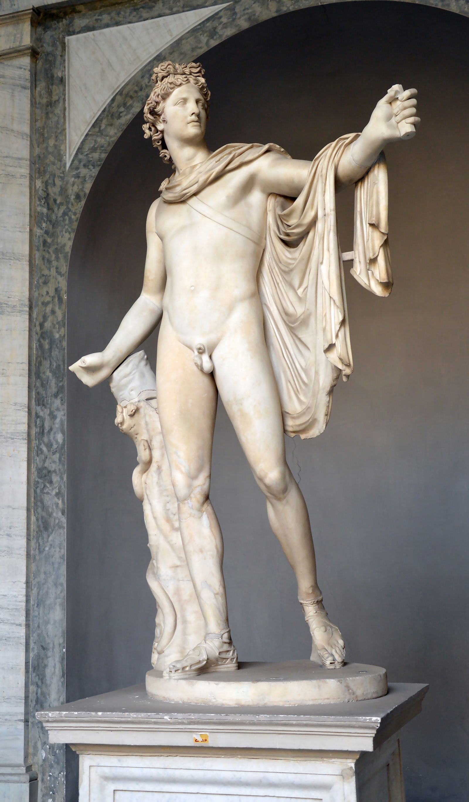

God of Prophecy, Music and Healing, Lord of Delphi

The Apollo Belvedere, Roman marble after a Greek bronze, c. 120–140 CE — Vatican Museums
Apollo is the god of prophecy, music, healing, plague and the bow: the force of clean form imposed on unruly matter, and the coldest of the Olympians to stand this close to. Son of Zeus and the Titaness Leto, twin of Artemis, he speaks through the oracle at Delphi, tunes the lyre the gods dance to, cures what can be cured, and in the same gesture sends the plague that cannot be argued with. His medium is always distance: the arrow that strikes from afar, the oracle that answers a question obliquely rather than plainly, the harmony that requires every note to keep its place. Where Hermes works by crossing boundaries, Apollo works by holding them: form, proportion, and consequence. Worth flagging early, since it is widely assumed and rarely correct: his familiar identification with the sun is not his archaic character. That fusion belongs properly to the Titan Helios, and only attaches to Apollo from around the 5th century BC, hardening into commonplace under Roman and later syncretism. The oldest Apollo has nothing to do with the solar disc. He is the god of the oracle, the plague-arrow and the measured song, and treating him as a sun god quietly erases most of what actually makes him frightening.
The MythsThe Homeric Hymn to Apollo (7th century BC) tells of Leto, pregnant by Zeus, driven from land to land by the jealousy of Hera. No country would receive her, terrified of the queen's wrath, until the small floating island of Delos agreed, having nothing left to lose and everything to gain from housing a god. Even then Hera detained Eileithyia, goddess of childbirth, on Olympus, and Leto's labour stretched to nine days and nights until the other goddesses sent Iris to bribe Eileithyia down with a necklace of gold and amber. Apollo was born grasping a palm tree on Delos's shore, and the hymn says that on the day of his birth the island itself turned to gold, rooted at last to the sea floor. He is reported to have demanded a lyre and a bow almost at once, and declared prophecy his own province before he could properly walk. His twin sister Artemis, in the tradition most often followed, was born first and helped deliver her brother, an odd and telling reversal for a goddess of virgin independence.
Still young, Apollo travelled to Mount Parnassus to claim the chasm at Delphi, guarded by Python, a monstrous serpent born of Gaia and set to watch over the spot. The Homeric Hymn to Apollo has him kill it with his arrows and leave the corpse to rot in the sun, which the Greeks took as the origin of the place-name Pytho and his own title Pythios. He founded the oracle on the site and instituted the Pythian Games in commemoration. Some later sources complicate the victory: killing even a monstrous child of Gaia was blood-guilt, and traditions recorded by writers such as Plutarch have Apollo undergo ritual purification afterwards, in one strand serving a period of exile and servitude, in the tale most often attached to this theme working as a herdsman for the mortal king Admetus. The detail matters: even the god who founds the clearest oracle in Greece pays a price for the killing that makes it possible.
Ovid's Metamorphoses (Book 1) tells this one, and it is worth naming as a Roman literary source rather than an archaic Greek cult story. Apollo mocks the child-god Eros (Cupid) for playing with weapons too large for him; Eros retaliates with two arrows, a golden one that kindles love, shot into Apollo, and a leaden one that kindles aversion, shot into the nymph Daphne. Apollo pursues her through the forest; she runs until her strength fails and prays to her river-god father Peneus for rescue, at which point she is transformed into a laurel tree even as Apollo's arms close around the trunk. He claims the laurel as his own tree from that moment: the crown for Pythian victors, later for poets and generals, grown from a refusal rather than a consent. It is one of the few Apollo stories where the god does not get what he is chasing, and the emblem he is best known for exists precisely because of that failure.
The satyr Marsyas found the double-piped aulos, which Athena had invented and then discarded on discovering how it distorted her face when played. Marsyas mastered the instrument and, in his pride, challenged Apollo to a musical contest, the Muses judging (Apollodorus, Bibliotheca 1.4.2; Ovid, Metamorphoses 6). The condition, set by Marsyas himself, was that the winner could do whatever he liked to the loser. Apollo won, in most versions by a technicality: he turned his lyre upside down and continued to play, or sang while he played, feats the aulos cannot match. He then flayed Marsyas alive and nailed his skin to a pine tree; the tears of the satyrs and nymphs who mourned him became, in Ovid's telling, the river that carries his name. It is the starkest Apollo story in the canon, and the clearest statement of what competing with a god actually costs: not defeat, but obliteration.
Book 1 of the Iliad opens with this story rather than the Trojan War proper. Chryses, priest of Apollo Smintheus, comes to ransom his captured daughter Chryseis from Agamemnon, who refuses him with contempt. Chryses prays to Apollo on the shore, and the god descends "like the night," his silver bow across his shoulder, and looses his arrows first on the mules and dogs of the Greek camp, then on the men themselves. Nine days of plague follow, funeral pyres burning continuously, before Achilles calls an assembly and the seer Calchas names the cause. Only the return of Chryseis and a full hecatomb offered to the god lift the plague, and the quarrel over her replacement, Briseis, is what drives Achilles from the field and sets the whole epic in motion. The healer and the plague-bringer are, here, explicitly the same hand.
One further episode belongs to another god's page rather than a full retelling here: as an infant, Hermes stole fifty of Apollo's cattle on his first night alive, an escapade that ends in reconciliation and the gift of the lyre, told in full on Hermes' own dossier.
Epithets and DomainsSlayer of Python and lord of the oracle built over the serpent's body; the title behind the Pythian Games and the Pythia, his prophesying priestess.
His single most constant Homeric epithet, forming the standing formula "Phoebus Apollo." It is far older than, and independent of, any solar identification.
The Delphic oracle's own title for him, naming the slanting, riddling phrasing of the Pythia's utterances, which required interpretation rather than obedience.
Physician of the gods (he treats Ares' wound in Iliad 5.401). The name gave rise to the paean, a hymn of thanksgiving or victory sung in his honour and, later, in other gods' honour too.
Invoked by Chryses in Iliad 1.39. A plague-and-rodent aspect of considerable antiquity, with an attested cult and temple at Sminthe in the Troad.
His birthplace and one of his oldest and most sacred sites, celebrated in Callimachus' Hymn to Delos and the great Athenian-led festival of the Delia.
His role presiding over the choruses of Helicon and Parnassus, standard in Hellenistic and Roman art and cult titulature.
Ancient and genuinely contested, even among Greek writers themselves, who argued over the derivation. The title survives in Athens' Lyceum, the gymnasium sacred to Apollo Lykeios where Aristotle later taught.
A Homeric formula for his archery: the god who strikes accurately from beyond reach, the clearest possible statement of Apollo's essential distance.
Worshipped in this form as a tapering, aniconic stone pillar set before house doors and at street corners, guardian of thresholds and public ways; attested in Aeschylus and Sophocles.
Apollo gave his name to a whole mode of consciousness: Nietzsche's Apollonian, the drive towards form, clarity, boundary and light, defined against the Dionysian pull towards dissolution and ecstasy. Jean Shinoda Bolen, in Gods in Everyman, draws him as the favourite son: the golden boy who succeeds early and lawfully, prefers distance to intimacy, aims rather than embraces, and trusts what can be articulated over what can only be felt. The bow and the lyre, his two instruments, are one gesture: the strung cord under tension, producing either the far-reaching shot or the perfectly measured note. Everything Apollonic works like that, effect at a distance, feeling disciplined into form.
The light expression is the most admired pattern in Western culture, which is itself telling. Apollo consciousness sees pattern early and names it precisely (prophecy, in the psychological register, is simply seeing further down the causal chain); it heals through knowledge; it makes excellence look serene. The Delphic maxims carved on his temple, know yourself and nothing in excess, are the archetype's own ethics: clarity turned inward, form applied to appetite. At its best it mentors as the Musagetes, the leader of the Muses, conducting other people's gifts into order without crushing them, and its standards create the institutions (medicine, music, law, science) that outlive every individual brilliance.
The shadow is what clarity costs. Marsyas, flayed alive for losing a music contest, is the shadow's signature: the expert annihilating the amateur, critique as skinning, superiority enforced with a cruelty no error deserved. Daphne and Cassandra mark the relational failure, brilliance that cannot metabolise refusal: one pursued until she becomes a tree rather than be caught, the other gifted prophecy and cursed to be disbelieved for saying no, the archetype punishing rejection by discrediting the rejecter. And the plague arrows of the Iliad complete the picture: the healer and the plague-sender are the same god, and the person who can diagnose everyone can poison a room with the same instrument. The Apollonic wound underneath is distance itself: the golden son is admired by everyone and known by no one, and the lyre only plays what the strung cord permits.
In Modern LifeApollo is the archetype of the elite specialist, and he is over-represented at the top of every profession that rewards precision: surgeons, architects, barristers, concert musicians, quants, senior academics. He is the practice's youngest-ever partner, the consultant whose slides are beautiful and whose diagnosis is right, the athlete whose technique is studied on video for decades. Modernity is substantially Apollonic by design, which is why his shadow is so often mistaken for professionalism.
In coaching, the pattern arrives polished and hurts in predictable places. Perfectionism: the standard applied to the self without mercy, and to others without warning (the Marsyas dynamic, visible in any organisation where juniors stop showing early drafts). Distance: relationships managed like patients or briefs, partners who report being performed at rather than met. Refusal-intolerance: watch what happens when this person's advice is declined; the Cassandra move, quietly ensuring the decliner loses credibility, is career-endingly common and almost never conscious. The development path runs directly through the despised opposite: mess, embodiment, improvisation, being audibly wrong in front of others. His brother Hermes got the lyre by breaking rules the day he was born; the Apollo pattern's growth usually begins the day it does something unrehearsed.
One more modern habitat deserves naming: the golden-child family system. Apollo is what a family produces when one child carries all the shine, and the adult pattern (achievement as identity, love experienced as audience, siblings cast as Marsyas) is one of the most common structures a leadership coach ever works with. The question that opens it is the one Delphi asked: know yourself, minus the CV.
CorrespondencesThe Sun, by his identification with Helios. The conflation is real but late (Hellenistic and after); archaic Apollo is a god of light in the sense of clarity, not the solar disc itself. Use the solar correspondence knowing its date.
Sunday (dies Solis), through the same Helios identification. Doubly conventional: the planetary week is late antique and the solar equation is itself a layer on the older god.
The seventh, securely his: Hesiod's Works and Days (770–771) calls the seventh holy because Leto bore Apollo on it, and seventh-day observances for him are widely attested.
Gold and white. Modern convention, though consistent with his epithet Phoebus, "the bright".
The lyre, the silver bow, the Delphic tripod, the omphalos stone, the laurel wreath, the aniconic Agyieus pillar at doorways.
The raven (his messenger in the Coronis story, blackened for bringing true bad news), the wolf (Lykeios), the dolphin (in the Homeric Hymn he leads his first Delphic priests in dolphin form), the swan (linked to his Delian birth), and the mouse of Smintheus.
The laurel (bay), definitively his from the Daphne myth and Delphic practice: wreaths for victors and suppliants, and later sources have the Pythia handling or chewing laurel. The cypress, from the Cyparissus story. Beyond these, plant lists are modern convention.
The paean, the sung hymn of praise or healing, is his characteristic offering: music offered as devotion. Otherwise laurel, first fruits, cakes and hecatombs at his great sanctuaries. Offering practised skill (a piece played well, a poem made) is a modern extension entirely in his grammar.
The Pythian Games at Delphi; the Thargelia at Athens, his early-summer purification festival; the Delia on Delos; the Spartan Karneia and Hyacinthia.
Delphi above all; Delos, his birthplace; the oracles of Didyma and Claros in Asia Minor; Bassae in Arcadia (Apollo Epikourios, "the helper").
For divination he is the central figure of the entire Greek tradition: Delphi was his mouth. The method is worth study by any diviner. The Pythia sat on the tripod over the cleft, entered trance, and spoke; priests rendered the speech into answers; the god's epithet for all this was Loxias, "the oblique", because the answer was true but never straight. The two maxims carved at the temple entrance, know yourself and nothing in excess, are the discipline the oblique answer demands of the asker: an oracle tells you most where you know your own stake in mishearing it. Apollo's divination is the receiving of clear signal through a crooked channel, and the crookedness is part of the message.
Zeus and Leto; born on Delos alongside his twin
Artemis, born first in the tradition where she midwives her own brother into the world
Coronis, mother of Asclepius, killed by Apollo for infidelity, the child rescued from her funeral pyre (Pindar, Pythian 3); Hyacinthus, killed by a discus, the hyacinth flower sprung from his blood; Daphne and Cassandra, the great refusals, Cassandra gifted prophecy and cursed never to be believed; Asclepius himself, the healer-son later destroyed by Zeus's thunderbolt for raising the dead
Python, slain to found Delphi; Marsyas, flayed for the presumption of competing; Niobe, whose sons Apollo shot dead while Artemis shot the daughters (Iliad 24.602–609); and briefly his own brother Hermes, reconciled over the gift of the lyre
Apollo was born into the settled order that followed the Titanomachy, one generation removed from the war itself, into a cosmos already ruled by his own father. Unlike the Titans he displaces nothing: he arrives fully formed, demands his instruments, and takes up a portfolio, prophecy, music, healing and plague, that no one before him had held in one hand. That combination, healer and destroyer wielding the same bow, is the puzzle every later reading of him has to solve.